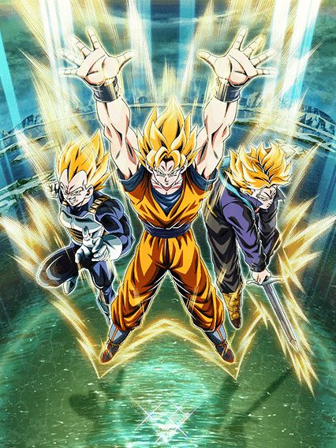
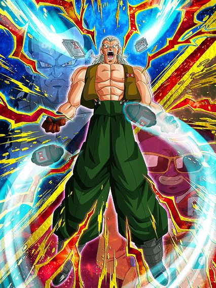
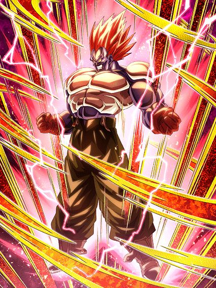
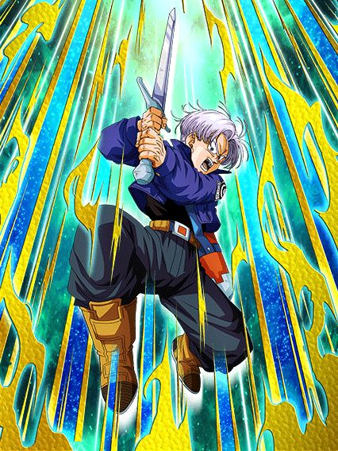
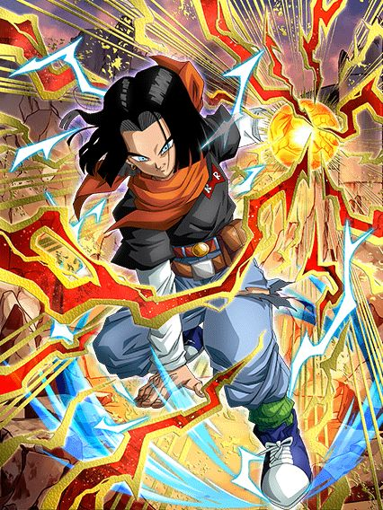
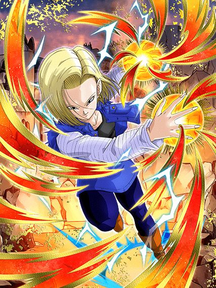
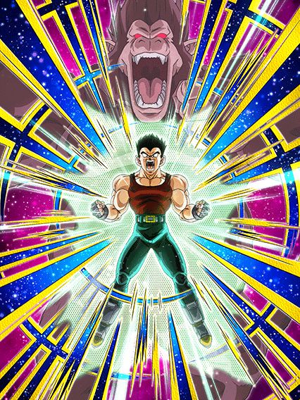

Kd a info da celebracão?
É, eu não tankei o global ter esquecido de mandar a info da celebração por 1 dia inteiro e ainda por cima incompleta, muito obrigado omatsu
Bom, essa é uma celebracão tranquila, nada pra desmontar o jogo.
talvez tranquila demais.. kd os eventos?
^ Sumário (clique para ir a qualquer um dos tópicos)

E então o número de gokus em um LR carnival aumentou pra 4.
Esse é um card que dá dano, wow, que coisa maravilhosa pra um meta onde tudo são AOEs e coisas pra tankar
Pelo menos o dano é bom.. se vc pegar os adicionais
Esses caras tem uma mecânica diferenciada que dá pra eles 1 adicional com 50% de ser super a cada 3 orbs pegos no turno, ou seja, se vc pegar 9 orbs eles podem lançar um quíntuplo super com o hidden potential incluso
E tranquilo, pq eles são orb changer e se beneficiam muito dos orbs pq eles tem sérios problemas de Ki, então é, preocupante, mas eles se resolvem
Agr uma coisa que eles não resolvem é a defesa, já que eles ganham metade da defesa no super e só aumentam defesa no ultra super attack, oq é justo mas triste, pq um mano calculou quanto de defesa eles teriam se ganhassem defesa no super normal e as coisas saíram bem absurdas..
Tipo, eles até chegam em um nível de defesa quase decente, e tem 30% de redução de dano na intro deles, só que ela só dura 5 turnos e quando eles acabarem, já sabe 💀
Bom, aproveitar pra falar que esse card tem animações muito lindas, é sério, esse card é um dos melhores de 2023 em questão de animações
E eles tem uma active que meu amigo, que active
Em ambos supers, esse card ganha 50% de ATK por 3 turnos, então o plano é pegar o máximo de adicionais possível num turno e no próximo usar a active, que por sinal é um crítico garantido e aumenta o ATK em 100%, e destruir o boss antes que ele destrua você
Sim o soco final podia ter sido muito melhor mas não dá pra não dizer que a animação e ost são incríveis, a câmera se aproximando do goku com o vegeta e trunks em distancias diferentes é genial
Mas enfim, é isso, o plano com eles é ter sorte nos adicionais e assim que puder usar a active, usar e matar o boss antes q a redução de dano deles vá de base e vc morra
O problema é eles serem feitos só pra eventos curtos
Se eles pelo menos tankassem um pouco melhor..
No geral um LR carnival forte, que podia ser mais, mas por enquanto vai ser bom ainda, e agr Super Saiyans tem um full 200%, bom pra uma rapaziada aí..
O EZA do Android 13 Dokkan Fest

Ué? Achei que ele era mid
Esse cara é uma literal cópia do Cooler STR eza do ano passado, stacka DEF no super, é suporte antes de transformar e não tem nenhuma mecânica a mais pra ajudar, só um adicional com 50% de chance de super se tiver um inimigo goku oq é bem ehhh..
É meio engraçado esse cara ser uma cópia descarada do Cooler STR e ainda sim ser melhor q ele, só por stackar mais DEF por super, ou seja, ele vira um tank mais rápido
Mas ele stackar mais é justo, já que a transformação dele é automática no turno 5 adiante, então oq vc stackar antes vai ser oq vc tem na luta

Crítico garantido contra goku? Que original..
Bom agora ele é um card genérico que dá dano, tem uma defesa boa até já q ele stacka bem na base mas é isso, ele dá dano e crítico, uaaaaau..
Sim o dano é bom mas nossa, EXATAMENTE oq a gente precisava né, obrigado buff ultra raro de vilões
Pera.. defensivo e suporte na base e foca em dano transformado? Sabe quem mais faz isso? COOLA COOLA FURIZA NO BROT-
EZA do Trunks PHY

Os caras conseguiram não tirar o debuff dele, e ainda sim deixar ele bom, blz então né.
Bom, esse cara ficou bem decente na verdade, pelo menos contra inimigo target goku ou androids, já q assim ele tem defesa ativa, já começou bem
Esse trunks foca 100% em dar dano, já que ele ganha bastante ATK na passiva e "stacka" 100% de ATK por 3 turnos no super attack, juntamente com ele buildar 50% de crítico tomando ataques, oq normalmente seria horrível mas de novo, a defesa ativa ajuda né
A parte mais uhhh bizarra do trunks é q no super ele ganha 150% de ATK na passiva mas PERDE 50% de DEF, isso antes do eza matava o card na hora, felizmente agora tem jeitos de ele compensar a defesa perdida
Com um aliado movie heroes no turno ele ganha 50% de ATK e DEF depois desse debuff, então é praticamente uma compensação (apesar de não ser exata, já que 100-50% não vai ser a mesma coisa q 50+50% mas vc entendeu) e ainda deram uma buildagem de 150% de DEF com 3 supers apenas, então no geral esse cara até consegue se manter bem de floater tendo uma defesa aceitável e defesa ativa ainda
Sabe qual o maior problema desse trunks? É o fato de ele ser um líder nuker e esse tipo de card é banido em algumas red zones, e convenientemente a red zone q mais tem isso é a red ribbon, q teria androids pra esse cara enfrentar, mas fazer o que né, pelo menos ele é uma opção quando alguma oportunidade aparecer.
EZAs do 17 e 18 do futuro
 
Eu quando um card do 17 e um card da 18 são parecidos pela 19361983 vez 🤯
Fato engraçado: esses 2 ezas tavam nos arquivos do jogo antes da celebração de download começar, e foi levemente engraçado passar por tudo achando q alguma hora eles iam ganhar eza e enfim aconteceu
Em resumo, os dois são nukers, enquanto a 18 é mais defensiva com 48% de chance de desvio, o 17 é mais ofensivo com 67% de chance de crítico já que o conhecimento desbalanceado do dokkan mais uma vez acha que habilidade defensiva = crítico
Mas isso não faz do 17 um card horrível, já que pelo menos os dois se ajudam, são ambos orb changers de cores diferentes e no geral até conseguem funcionar em alguns eventos, problema é a restrição que eles tem de aliado future saga, mesmo que vc prefira usar eles juntos, caso não queira vc sai perdendo muito
EZA do Vegeta GT Macaco F2P

Isso.. não devia estar aqui ainda.
Tipo, eu entendi que o global literalmente não tem NADA já que a gente não vai celebrar o dual dokkan fest de ano novo com o jp mas pô, meio random sabe
Enfim, esse card é muito decente, e funciona sim, mesmo que ele só tenha alguns times
Basicamente ele tem metade da passiva só se vc tiver um alidado giant ape power no time, oq é bem fácil se vc estiver usando qualquer card gt já que quase todos do meta são ssj4 mesmo (ele funciona bem no time do vegetto limit breaker)
Ele ganha mais defesa mas só contra um inimigo shadow dragon saga e aí já é pedir demais né 💀
Acho que o grande diferencial desse vegeta é ele ser um card "à prova de morte instantânea", pq ele tem defesa ativa caso sua vida esteja acima de 50% (bela condição por sinal viu), e a condição pra ele se transformar em oozaru é de estar abaixo de 50% de HP a partir do turno 4, então enquanto vc estiver com a vida boa, o vegeta consegue até tankar umas coisas e quando sua vida cair muito, ele se transforma, impede o inimigo de dar supers ou AOEs, e dá dano grátis, ISSO é um card F2P de vdd
A única coisa que faltou nele foi um suportezinho, mas isso tá bom já, pelo menos ele já tem saiyan roar que ajuda demais
Esse por sinal é o último card útil de 2023, a não ser q vc exclua ezas né
os ezas do world tournament de final de ano
Um dia desses eu mato quem tem a ideia de colocar um world tournament no final de ano.
Tá.. vamo lá né
O piccolo daimaoh é um suporte pra extreme class e não só precisa de um time inteiro extreme pra funcionar, mas tem incríveis 30% DE CHANCE DE DEFESA ATIVA HAHAA
O gokuzinho e o vegeta são interessantes pelo menos, tem um dano legal, o goku tem 60% de chance de desvio e o vegeta tem uh.. 50% de chance de defesa ativa 💀
O bills precisa tomar um monte de ataque, acho q se o nome do card não viesse de graça ele teria q tomar golpe pra isso tmb
Ele tem defesa ativa se estiver num time full exploding rage oq é interessante já q não é a pior das categorias..
Por sinal, esse world tournament foi todo ferrado slk
O global simplesmente anunciou o world tournament meses atrás, e um dia antes fecharam o evento e disseram q foi por causa de um bug
A parte engraçada foi q os cards já estavam nos arquivos do jogo e tals e foram mudados de última hora pra dezembro de 2024KKKKKKKKK
Belo jeito de encerrar o ano ein dokkan, coisa boa
Você chegou ao fim dessa página!
Obrigado por ler tudo, e fica a vontade pra ver outras

 (Giant Ape)")